Machine Learning
in Fluid Mechanics
Lecture 4 — Surrogate models for discrete predictions
Andre Weiner
Chair of Fluid Mechanics
Gas–liquid mass transfer
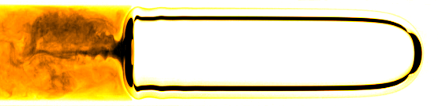
Source: Schlüter group, TU Hamburg · DFG SPP 1740 — Reactive Bubbly Flows
Gas–liquid transport across scales
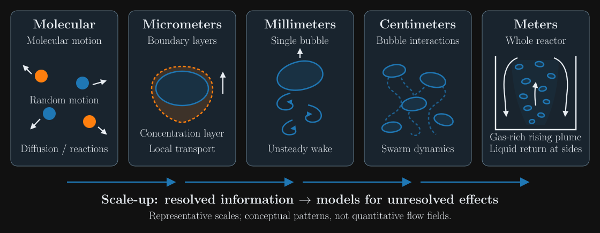
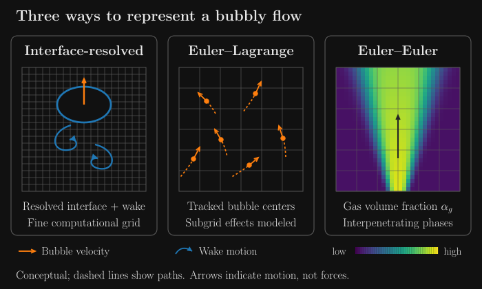
What controls a rising bubble?
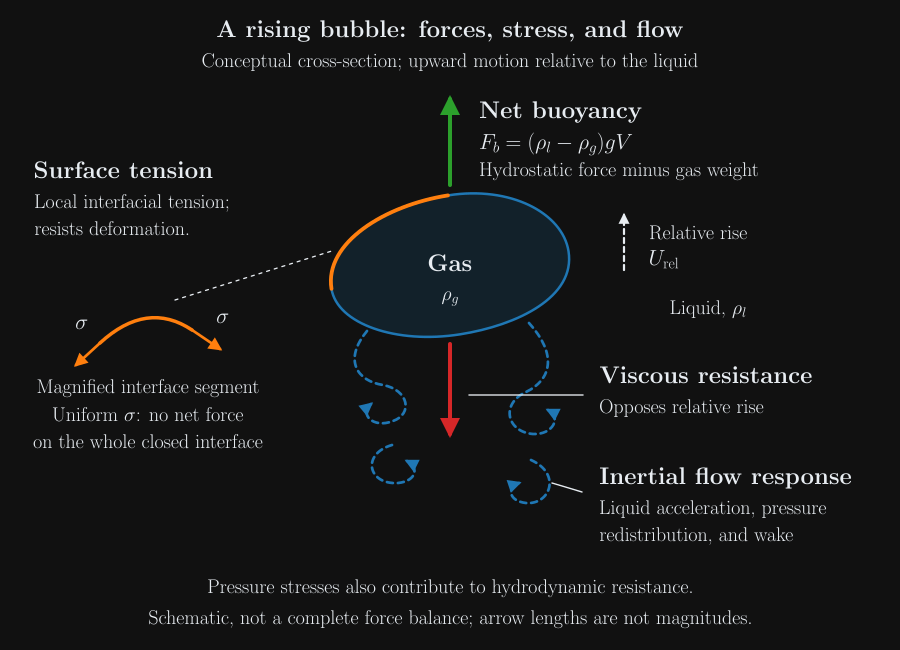
Eötvös number: buoyancy and surface tension
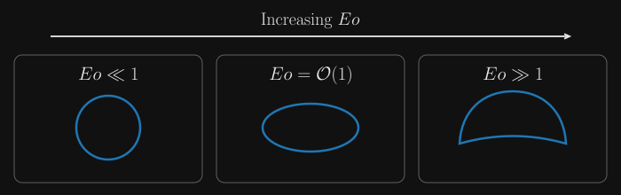
Galilei number: inertia and viscosity
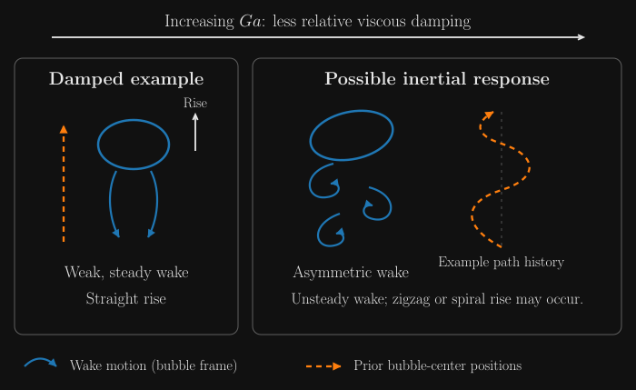
Rising-bubble regimes

From a drawn map to a predictive model
The same data on linear axes
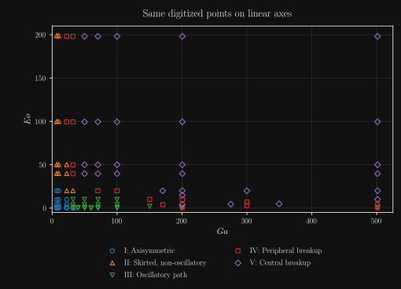
Raw and logarithmic features

A first binary classification problem
The perceptron as an error-correction rule
What do you expect from the training?
- Can the loss become zero?
- When do the updates stop?
- Is the loss monotonically decreasing?
Training the perceptron
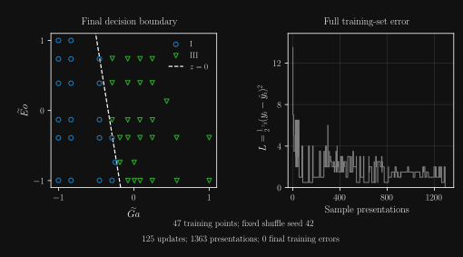
From hard decisions to class probabilities
A probability thought experiment
- P(Y=1∣x): well inside regime III?
- P(Y=1∣x): well inside regime I?
- P(Y=1∣x): close to the boundary?
- P(Y=0∣x): well inside regime I?
Turning the linear score into probabilities
Maximum likelihood
From likelihood to log-likelihood
Likelihood and log-likelihood landscapes

Binary cross entropy
The logistic-regression update
Predicted probabilities and the decision boundary
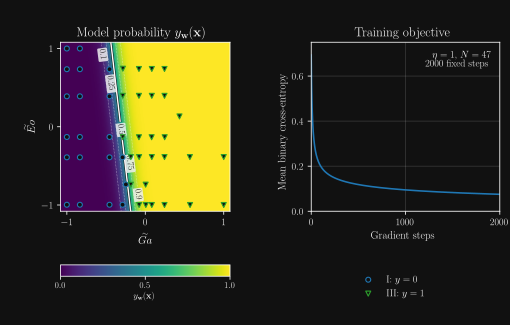
Regime I versus regimes II and III
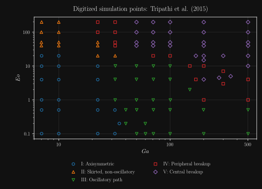
Two component models and a learned combination
Combining two logistic models
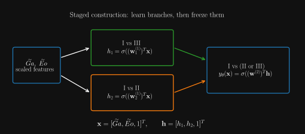
A multilayer perceptron
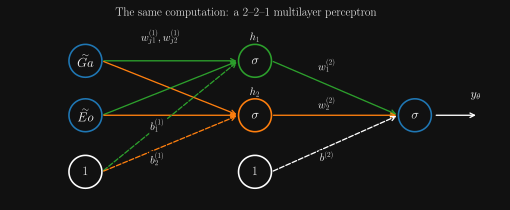
Component and combined probability maps
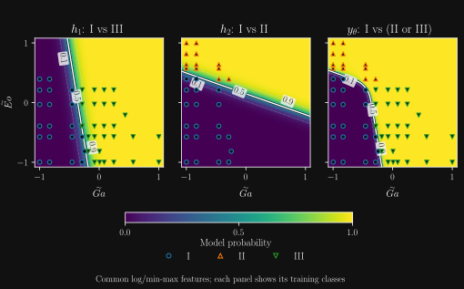
From two outcomes to K classes
We now distinguish all five rising-bubble regimes.
Each class receives its own probability.
The class identifiers imply no ordering or distance.
One-hot encoding
One target entry per class, matching the model output:
Exactly one entry identifies the observed class.
Which target vectors are valid?
For \(K=5\) and the observed class \(y_i=4\):
- \((0,0,0,1,0)^{\mathsf T}\)
- \((0,1,0,0,0)^{\mathsf T}\)
- \((0,0,1,1,0)^{\mathsf T}\)
- \((0,0,0,0,0)^{\mathsf T}\)
- \((0.1,0.1,0.1,0.6,0.1)^{\mathsf T}\)
The MLP with a softmax output layer
\(0<\widehat y_{ik}<1\), \(\sum_k\widehat y_{ik}=1\)
Which probability predictions are valid?
For the true target \(\mathbf y_i=(0,0,0,1,0)^{\mathsf T}\):
- \((0.01,0.02,0.02,0.93,0.02)^{\mathsf T}\)
- \((0.04,0.80,0.04,0.08,0.04)^{\mathsf T}\)
- \((0.20,0.20,0.20,0.20,0.20)^{\mathsf T}\)
- \((0.10,0.10,0.10,0.90,0.10)^{\mathsf T}\)
- \((0.10,-0.10,0.10,0.80,0.10)^{\mathsf T}\)
Categorical cross entropy
We minimize the negative mean log-probability
assigned to the observed classes.
The one-hot target selects the observed-class probability.
One training trajectory, several snapshots

Validation-based early stopping
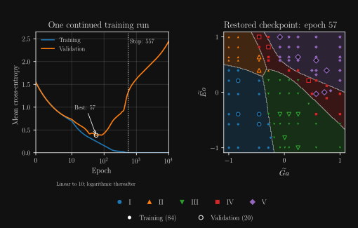